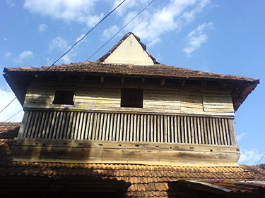

Pathanamthitta
Pathanamthitta district is known as the Headquarters of Pilgrimage Tourism, of the
Kerala State. Situated near the Western Ghats and bordered by the hills, Pathanamthitta district is a
treat to eyes with its vast unending stretches of forests, rivers and rural landscapes.
The youngest district in the sate of Kerala nestles its head on the slopes of western ghats and stretches to
the low-lying rice fields bordering Alappuzha district.
Places to Visit in Pathanamthitta
- Pandalam Palace.
- Aranmula.
- Thriveni Sangamam.
- Gavi.
- Konni Forest Reserve.

The Pandalam family was an off-shoot of the mighty Pandya dynasty, and in spite of being a small faction, commanded great wealth and respect in what is now modern Kerala, albeit thousands of years ago. The Pandalam Palace is maintained in their memory and contains mixed influences of Pandya and Malabar architecture. The Palace is considered the childhood home of Lord Ayyappa, and is one of the foremost Pathanamthitta tourist places.

Aranmula, a UN heritage site, is famous for two things - the boat race and the Aranmula Parthasarathy Temple. Then, you can also buy an Aranmula Kannadi, an intricately-designed metal mirror made using a secret method that’s been passed down from over generations. It’s said to have a healing influence. Next, try and plan your trip during the Vallasadya, which is a huge 70-item feast celebrating the bravery and physical might of the oarsmen who participate in the boat festival.

Hindus believe that rivers originating from holy places have a cleansing effect, and a dip in one will erase all the sins in the past. Now, that depends on how much of a believer you are, but at Thriveni Sangamam, there’s one thing for sure - it’s one of the most breathtaking places to visit in Pathanamthitta. It is a confluence of three rivers - the Pamba River Manimala River and the Achankovil River, all deeply connected with Sabarimala.

Gavi is a carefully-protected natural reserve inhabited by some of the rarest and most elusive animals known to man. That’s why you have to be quiet, and carry your own litter when in Gavi. The local authorities, along with the villagers, go to great lengths to maintain this ecological vault of sorts. Gavi is a great place to go to trekking, but you have to be accompanied by forest officials wherever you go. The way the people treat Mother Nature will create deep respect for Gavi, making it one of the top tourist spots in Pathanamthitta.

The Konni Forest reserves are a great place to spend a day with your family if you’re visiting Pathanamthitta, especially because it’s a very well-organised forest resort with excellent guides willing to take you around the place.. If you can visit the elephant training centre where they break in wild elephants. Or, ride the bowl-shaped boats.